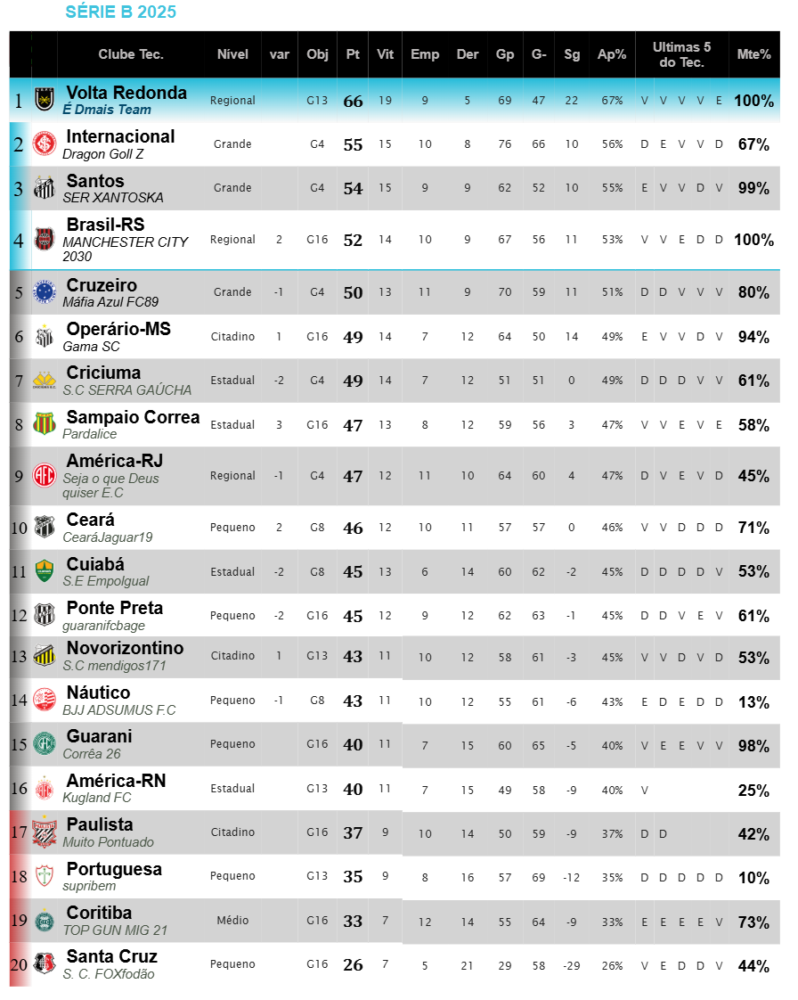
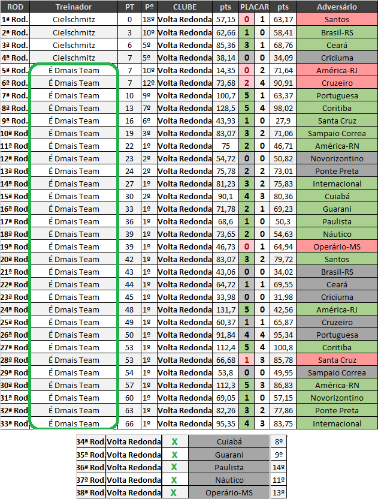

Campeonato de Cartola
A vitória no cartola é o sucesso do seu time!

Redação Cartola - 20/11/2024 - 9h43min 
Num campeonato em que Volta Redonda e Internacional monopolizam as duas primeiras colocações desde a 11ª rodada, o "round 33" trouxe a oportunidade de segundo confronto entre as duas principais equipes da competição, trazendo uma vitória do Volta Redonda pelo placar de 4x3.
Com 60 pontos contra o 55 do vice Inter,a classificação geral demostra o quão fundamental foi para o tigre fluminense ter vencido nos dois confrontos diretos (3x2 na rod.14 e 4x3 na 33), não apenas para a manutenção de uma liderança que já perdura a 18 rodadas, como a garantir o aurinegro como primeiro clube matematicamente classificado à inédita participação na divisão de elite a partir da temporada que vem.
Agora a meta do professor "É Dmais Team" é garantir o caneco da segundona que, além dos 50pts no ranking geral de tecnicos e premiação de 230 reais, colocará o nome do treinador na condição de ídolo eterno do maior clube do interior do Estado do Rio de Janeiro.
Abaixo, a campanha completa do "volta", além dos cinco adversários que ainda restam na busca do primeiro título da história do clube e treinador. 